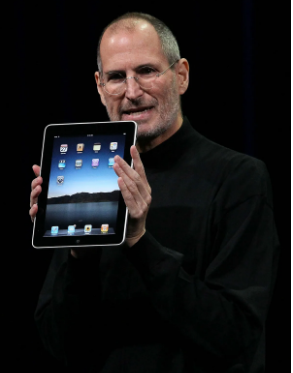

Steve Jobs
The man who introduced Touch-screen

Steve Jobs introducing the iPad at an Apple event, San Francisco, 2010.
Here's a time line of Steve Jobs's life:
- 1974 - Cupertino, California, located in what is now known as Silicon Valley.
Though he was interested in engineering, his passions of youth varied. He dropped out of Reed College, in Portland, Oregon, took a job at Atari Corporation as a video game designer in early 1974, and saved enough money for a pilgrimage to India to experience Buddhism. - 1977 - Though Jobs had long, unkempt hair and eschewed business garb, he managed to obtain financing, distribution, and publicity for the company, Apple Computer, incorporated in 1977—the same year that the Apple II was completed. The machine was an immediate success, becoming synonymous with the boom in personal computers.
- 1983 - In 1983 the company recruited PepsiCo, Inc., president John Sculley to be its chief executive officer (CEO) and, implicitly, Jobs’s mentor in the fine points of running a large corporation. Jobs had convinced Sculley to accept the position by challenging him: “Do you want to sell sugar water for the rest of your life?” The line was shrewdly effectiv
- 1985 - Apple steadily improved the machine, so that it eventually became the company’s lifeblood as well as the model for all subsequent computer interfaces. But Jobs’s apparent failure to correct the problem quickly led to tensions in the company, and in 1985 Sculley convinced Apple’s board of directors to remove the company’s famous cofounder.
- 1986 - Meanwhile, in 1986 Jobs acquired a controlling interest in Pixar, a computer graphics firm that had been founded as a division of Lucasfilm Ltd., the production company of Hollywood movie director George Lucas. Over the following decade Jobs built Pixar into a major animation studio that, among other achievements,
- 1996 - In late 1996 Apple, saddled by huge financial losses and on the verge of collapse, hired a new chief executive, semiconductor executive Gilbert Amelio. When Amelio learned that the company, following intense and prolonged research efforts,
- 1997 - Apple’s board of directors soon became disenchanted with Amelio’s inability to turn the company’s finances around and in June 1997 requested Apple’s prodigal cofounder to lead the company once again. Jobs quickly forged an alliance with Apple’s erstwhile foe, the Microsoft Corporation, scrapped Amelio’s Mac-clone agreements, and simplified the company’s product line
- 1998 - Innovate he did. In 1998, Jobs introduced the iMac, an egg-shaped, one-piece computer that offered high-speed processing at a relatively modest price and initiated a trend of high-fashion computers.
- 2001 - In 2001 Jobs started reinventing Apple for the 21st century. That was the year that Apple introduced iTunes, a computer program for playing music and for converting music to the compact MP3 digital format commonly used in computers and other digital devices.
- 2003 - In 2003 Apple began selling downloadable copies of major record company songs in MP3 format over the Internet.
- 2006 - By 2006 more than one billion songs and videos had been sold through Apple’s online iTunes Store. In recognition of the growing shift in the company’s business, Jobs officially changed the name of the company to Apple Inc. on January 9, 2007
- 2007 - In 2007 Jobs took the company into the telecommunications business with the introduction of the touch-screen iPhone, a mobile telephone with capabilities for playing MP3s and videos and for accessing the Internet. Later that year
- 2008 - Throughout 2008 Jobs lost significant weight, which produced considerable speculation that his cancer was back.
- 2009 -In June 2009 the Wall Street Journal reported that Jobs had received a liver transplant the previous April. Not disclosed was whether the pancreatic cancer he had been treated for previously had spread to his liver.
- 2011 In January 2011, however, Jobs took another medical leave of absence. In August he resigned as CEO but became chairman. He died two months later.